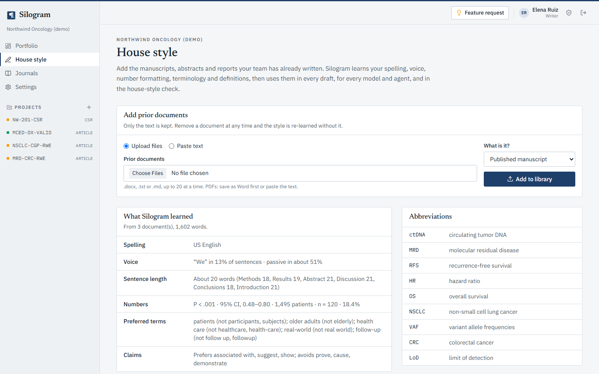
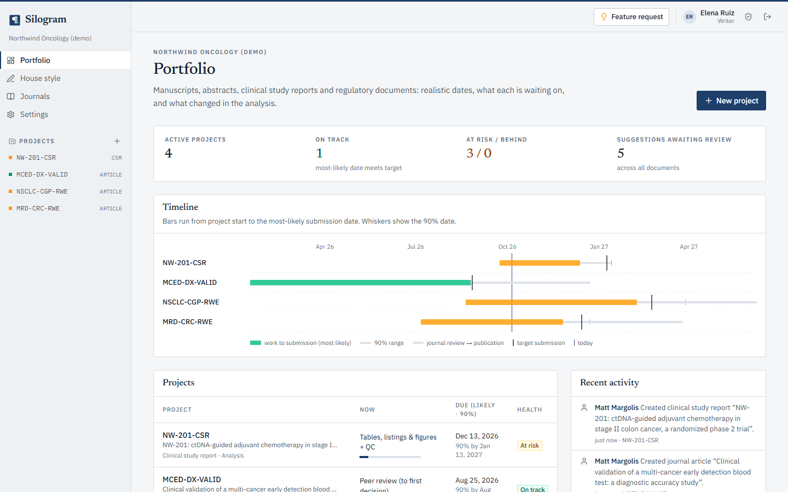
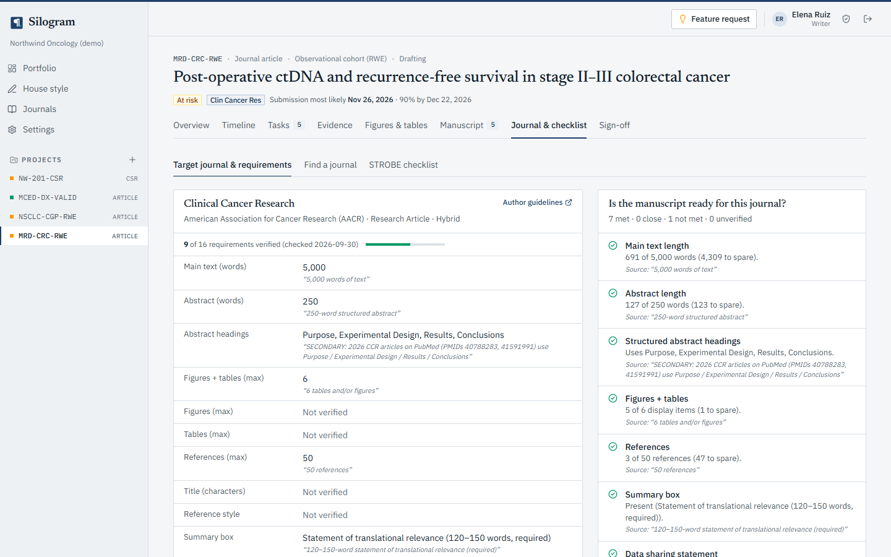

Project › Evidence
The cohort, read from the code
Each inclusion and exclusion step shows the patients left after it and links to the lines that apply it. Analysts verify each definition, and the verification goes stale when the code changes.

Silogram connects the SQL, R and Python in your analysis repository to the manuscripts, abstracts, clinical study reports and regulatory documents built on it. When the analysis changes, each document shows which numbers moved.
Read-only access to your repository. Silogram never trains AI models on your documents.
Results
A total of 499 patients underwent randomization, 252 to ctDNA-guided management and 247 to standard management. Median follow-up was 37 months. Two-year recurrence-free survival in the intention-to-treat population was 92.8% in the ctDNA-guided group and 91.9% in the standard-management group (HR 0.88; 95% CI 0.47 to 1.64). Adjuvant chemotherapy was given to 16.3% and 27.5% of patients, respectively.
10 numbers linked1 not linked1 agent suggestion
Linked value
hr_rfs = 0.88 (0.47 to 1.64)
analysis/survival.R:118 · 4f2a9c1
Grok bot · suggestion
Inserted “in the intention-to-treat population” to name the analysis population, as the SAP does.
Not linked to analysis
“37 months” was typed by hand. Link it to a value before sign-off.
The problem
Publications, medical writing, regulatory, RWE/HEOR and biostatistics teams work from the same numbers, kept in different files.
Values move from tables, listings and figures into Word one at a time. A reviewer can’t tell which script, line or commit produced a number, or whether the code changed after it was copied.
Journal requirements, congress deadlines and review rounds sit in trackers that go stale between status meetings.
General AI writing tools produce confident prose. They have no link to the numbers your analysis produced.
How it works
Step 1
Point Silogram at the Git repository that holds your SQL, R and Python. GitHub, GitLab and Bitbucket work with a read-only token.
northwind/nw-201-analysis · main · 4f2a9c1
Step 2
Each cohort step shows the patients left after it, and each variable and endpoint links to its lines and commit. CDISC ADaM names read in plain English.
SAFFL == "Y" → in the safety populationCNSR == 0 → event observed, not censored
Step 3
Writers draft with tracked changes, in your house style. Each number in the text links to an analysis value or gets flagged.
{{hr_rfs}} renders as 0.88 and links to analysis/survival.R:118
Step 4
Co-authors suggest, writers accept or reject, and approvers sign. The Word export keeps the tracked changes.
NW-201_primary-results_v6.docx · tracked changes kept
Product
Writers, statisticians and reviewers work from the same verified definitions and values.
Project › Evidence
Each inclusion and exclusion step shows the patients left after it and links to the lines that apply it. Analysts verify each definition, and the verification goes stale when the code changes.
Project › Manuscript
Writers, co-authors and agents work in one draft, and a rerun updates the numbers and shows what moved. Export to Word with real tracked changes, or import a co-author’s edits as suggestions.

Workspace › House style
Silogram learns your spelling, voice, sentence length, how you write P values, CIs and n, and your preferred terms and abbreviations. Every model and agent writes to it, the house-style check proposes mechanical fixes as tracked suggestions, and Silogram never trains AI models on your documents.

Portfolio
Every document shows a most likely date and a 90% date, recalculated from the work done so far. Plan against forecast shows which phase is slipping and whether it moves submission.

Project › Journal & checklist
Every requirement quotes the author guidelines or says Not verified, and the readiness check compares your draft with each one. Reporting checklists cover STROBE, RECORD, CONSORT 2025, STARD 2015 and TRIPOD+AI.

Documents
Each document type gets its own outline, plan, drafting voice and check. All of them draw on the same verified analysis.
Every outline includes a use-of-AI section, drafted from the log of model and agent calls.
Agents and models
Run the model your team prefers and connect the agents you already use. An agent’s edit reaches the text only after a person accepts it.
| Scope | What the agent can do |
|---|---|
| read | Read verified definitions, values, sections and the house style |
| suggest | Propose edits, which arrive as tracked suggestions |
| comment | Leave comments on a section for the writers |
# Token from Settings › AI & agents
claude mcp add --transport http silogram \
https://app.silogram.ai/api/mcp \
--header "Authorization: Bearer sg_…"Each token is shown once, stored as a hash, rate-limited and revocable at any time.
Security
Silogram is designed to support 21 CFR Part 11 and HIPAA requirements for electronic records, electronic signatures and protected health information.
| Meaning | Signer | Signed (UTC) |
|---|---|---|
| Author | Elena Ruiz | 2026-10-01 09:12 |
| Reviewer | Priya Raman | 2026-10-01 15:47 |
| Approver | James Okafor | 2026-10-02 10:05 |
SHA-256 9e0c…b25aLocked after approval
Append-only and tamper-evident. Each entry records who changed what and when, with the old and new values.
Each signature records the signer, the date and time, and its meaning, bound to a SHA-256 digest of the exact content signed.
Approval needs a review by someone else and no open suggestions. It locks the document until someone reopens it with a reason.
Authenticator-app codes, which admins can require for everyone. Repeated failed sign-in or signing attempts lock the account.
Idle sessions end after a time the workspace sets, checked in the browser and again on the server.
No-PHI workspaces keep likely patient identifiers out of uploads, model calls and agent writes. PHI workspaces allow only BAA-covered model connections and agents.
Model keys and repository tokens are encrypted at rest with AES-256-GCM, agent tokens are stored as hashes, and connections use TLS.
A traceability matrix and test evidence generated from the automated test suite, as a starting point for your own validation.
Pilot
Pick one document your team is writing now. We connect its analysis repository and work with your writers and statisticians for 90 days.